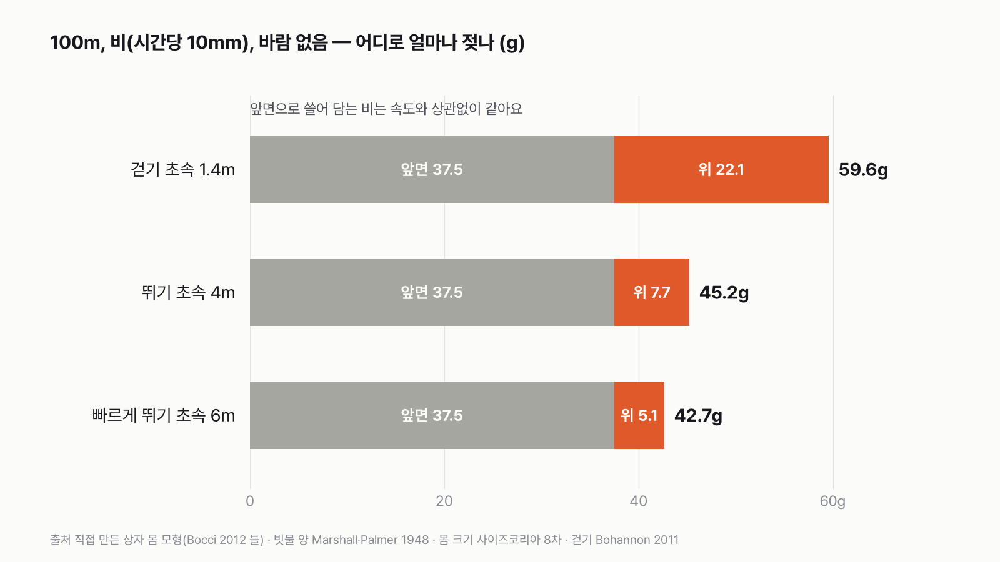
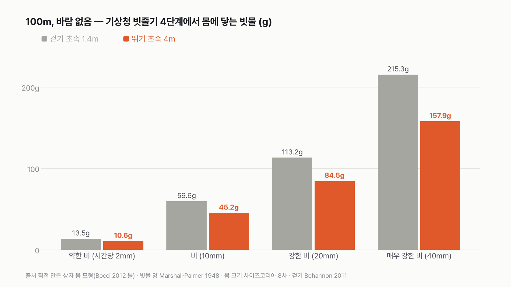
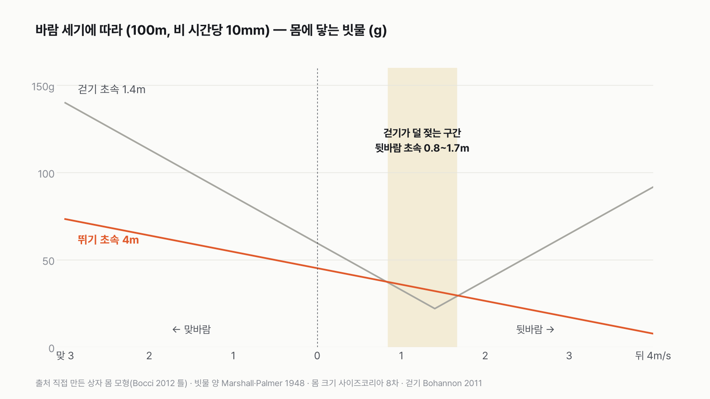
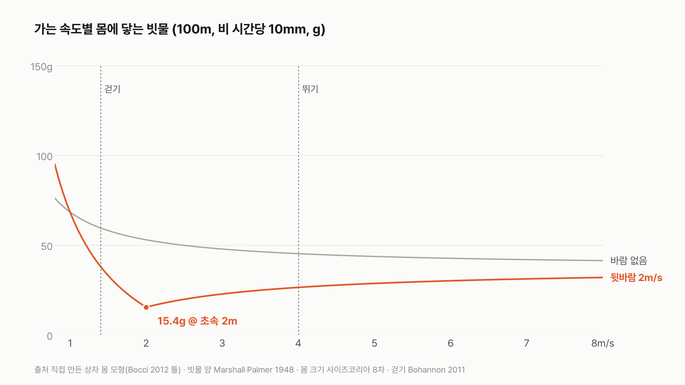

비 올 때 뛰면 덜 젖을까, 걸으면 덜 젖을까
결과를 보기 전에 먼저 골라 주세요. 투표하면 독자 예상과 데이터 결과를 나란히 보여 드려요.
- 우산 없이 100m를 가야 해요. 뛰는 게 나을까요, 걷는 게 나을까요?
- 조건은 미리 정해 뒀어요. 기상청 강수 강도 4단계, 바람 세 가지(없음·맞바람·뒷바람), 한국 성인 평균 몸 크기예요.
- 물리 논문의 계산식과 측정 기록으로 계산했어요. 투표하면 결과가 바로 아래에 열려요.
조건과 규칙
- 거리는 100m예요. 50m·200m·500m도 같이 계산했어요.
- 빗줄기는 기상청 구분 4단계(약한 비·비·강한 비·매우 강한 비), 바람은 없음·맞바람·뒷바람 세 판이에요.
- 몸은 한국 성인 남성 평균 크기로, 뛰는 사람과 걷는 사람이 같아요. 걷기는 성인 보통 걸음(초속 1.4m 안팎)이에요.
- 몸에 닿는 빗물(g)이 적은 쪽이 이겨요. 옷이 머금는 물, 튀는 물, 웅덩이는 넣지 않아요.
독자 투표
비 올 때 우산 없이 100m, 뛸까 걸을까?
결과 요약
- 최종 승자는 뛰기예요. 바람 없음·맞바람·뒷바람(모두 초속 2m 기준) 세 판에서 뛰기가 3승 0패예요.
- 바람이 없으면 100m에 걸으면 59.6g, 뛰면 45.2g의 빗물이 몸에 닿아요. 맞바람이면 차이가 더 벌어져요.
- 걷기가 이기는 딱 하나의 조건은 등 뒤에서 걷는 속도만큼(초속 0.8~1.7m) 바람이 불 때예요. 뒷바람이 초속 0.8m보다 세면, 가장 덜 젖는 건 바람과 같은 속도로 가는 거예요.
그래서? 바람이 없거나 앞에서 불면 뛰는 쪽이 덜 젖어요. 뒤에서 살랑 불 땐 걸어도 손해가 아니에요.
독자 예상 vs 데이터 결과
비 올 때 우산 없이 100m, 뛸까 걸을까?
데이터로 보면 뛴다. 등 뒤에서 걷는 속도만큼(초속 0.8~1.7m) 바람이 불 때만 걷기가 덜 젖어요.


겨룬 조건
비가 오는데 우산이 없어요. 100m를 뛰어야 덜 젖을까요, 걸어야 덜 젖을까요? 위에서 정한 조건으로 겨뤘어요. 시간당 10mm 비, 한국 성인 남성 평균 몸, 걷기는 초속 1.4m(성인 보통 걸음), 뛰기는 초속 4m예요. 몸에 닿는 빗물이 적은 쪽이 이겨요.
| 판 | 승자 | 승부를 가른 숫자 |
|---|---|---|
| 1 바람 없음 | 뛰기 | 45.2g vs 59.6g |
| 2 맞바람 초속 2m | 뛰기 | 64.0g vs 113.2g |
| 3 뒷바람 초속 2m | 뛰기 | 26.5g vs 38.1g |
| 조건을 바꿔도 결론 같음 | 걷기 vs 뛰기 |
|---|---|
| 빗줄기 4단계(시간당 2~40mm) | 13.5g vs 10.6g ~ 215.3g vs 157.9g, 모두 뛰기 |
| 거리 50~500m | 모두 뛰기가 24.1% 덜 |
| 뛸 때 숙여서 윗면 2배 | 59.6g vs 53.0g, 뛰기 |
| 윗면을 타원으로 보정 | 54.8g vs 43.6g, 뛰기 |
| 공기 속 빗물을 분포식으로 | 64.4g vs 50.0g, 뛰기 |
최종: 세 판 3승 0패로 뛰기가 이겨요. 걷기가 이기는 조건은 딱 하나, 등 뒤에서 걷는 속도만큼 바람이 불 때예요.
1판 바람 없음 — 뛰기 승
바람이 없을 때 뛰는 쪽이 덜 젖어요. 100m를 시간당 10mm 비 속에서 걸으면 몸에 빗물 59.6g이 닿고, 뛰면 45.2g이 닿아요. 종이컵(약 180mL) 3분의 1과 4분의 1 정도예요.
계산해 보니 차이가 생각보다 작았어요. 앞면이 쓸어 담는 비는 걸을 때도 뛸 때도 37.5g으로 똑같거든요. 100m를 가는 동안 몸 앞면이 지나가는 공기의 양은 속도와 상관없이 같고, 그 안에 떠 있는 빗방울을 다 쓸어 담아요. 빨리 가면 1초에 더 많이 부딪히지만, 그만큼 빨리 지나가요.
속도로 줄일 수 있는 건 머리와 어깨에 떨어지는 비예요. 걸으면 71초 동안 22.1g, 뛰면 25초 동안 7.7g이라 3분의 1로 줄어요. 걷기와 뛰기의 차이는 14.4g이에요. 뛰면서 발에 튀어 오르는 물이 14g을 넘으면 이 판은 걷기로 넘어가요.
빗줄기를 바꾸고(약한 비~매우 강한 비), 거리를 바꾸고(50~500m), 몸 모양을 바꿔도 이 판의 결론은 같았어요. 계산 방식은 근거 탭에 적었어요.


2판 맞바람 — 뛰기 승
앞에서 초속 2m로 바람이 불면, 빗방울이 나를 향해 날아와 앞면에 더 부딪혀요. 이때는 오래 있을수록 계속 부딪혀서 차이가 커져요. 시간당 10mm 비에서 걸으면 113.2g, 뛰면 64.0g이에요. 맞바람에선 빠를수록 무조건 덜 젖어요.
3판 뒷바람 초속 2m — 뛰기 승
뒤에서 초속 2m로 바람이 불면, 빗방울이 나와 같은 방향으로 날아가 앞면에 덜 부딪혀요. 그래서 셋 중 가장 덜 젖는 판이지만, 여기서도 뛰기(26.5g)가 걷기(38.1g)보다 덜 젖어요. 걷는 사람은 바람보다 느려서 등 쪽으로 비를 맞거든요.
반전: 걷기가 이기는 딱 하나의 조건
뒷바람 세기를 바꿔 보다가 의외의 구간을 찾았어요. 빗방울이 나와 같은 방향으로 날아가니, 내가 바람과 비슷한 속도로 가면 앞면에 부딪히는 비가 거의 없어지더라고요. 뒷바람이 딱 걷는 속도(초속 1.4m)로 불면 걷는 사람은 머리 위로 떨어지는 22.1g만 맞고, 뛰는 사람은 머리 위 7.7g에 앞면 24.4g이 더해져 32.1g이에요.


걷기가 이기는 건 뒷바람이 초속 0.8~1.7m일 때예요. 바람 세기 표로는 연기가 바람 따라 날리는 정도(초속 0.4~1.3m)에서, 얼굴에 바람이 느껴지기(초속 1.8m부터) 직전까지예요. 이보다 약하면 바람이 없을 때처럼, 이보다 세면 뛰기가 다시 이겨요.
뒷바람이 불 땐 1등이 따로 있어요. 뒷바람이 초속 0.8m보다 세면, 가장 덜 젖는 건 바람과 똑같은 속도로 가는 거예요. 초속 2m 뒷바람이면 초속 2m(빠른 걸음)로 갈 때 15.4g으로 가장 적어요. 걸으면 38.1g, 뛰면 26.5g이에요. Bocci(2012)도 앞면이 윗면보다 충분히 넓으면 뒷바람 속도가 가장 덜 젖는 속도라고 정리했어요. 사람 몸은 앞면이 윗면의 6.2배라 이 조건에 들어가요.


움직이는 사람 몸을 그대로 계산한 최근 연구(Crespi·Manini 2026)도 대부분의 바람에서 뛰는 쪽이 낫고, 예외는 뒷바람이 내 속도와 비슷하고 옆바람이 거의 없을 때라고 했어요. 이 모형의 세 판과 같은 모양이에요.
"MythBusters는 걷는 게 덜 젖는다던데?"
미국 방송 「MythBusters」는 이 질문을 두 번 다뤘어요. 2003년 9월 첫 회('Exploding Toilet')의 실험에서는 시간당 2~3인치(51~76mm)의 인공 비를 뿌리고 걷기·뛰기 뒤 옷 무게를 쟀는데, 걷는 쪽이 덜 젖었다고 판정했어요. 2005년 10월 다시 다룬 방송에서는 진짜 비 속에서 해 보니 뛰는 쪽이 덜 젖었다고 판정을 바꿨어요. 이 계산과 다르게 나올 수 있는 이유는 여럿이에요. 스프링클러로 만든 비는 빗방울 크기와 떨어지는 속도가 진짜 비와 다르고, 뛰면 튀는 물이 늘고, 옷은 몸에 닿은 물을 다 머금지 않고, 한두 번씩만 잰 결과라 우연이 크게 섞여요. 학술지에 실린 실험(Peterson·Wallis 1997)도 뛰는 쪽이 덜 젖었다고 소개되지만, 원문을 확인하지 못해 숫자는 쓰지 않았어요.
비 오는 날 할 수 있는 건 생각보다 단순해요. 바람이 어느 쪽에서 부는지 한 번 느껴 보는 거예요.
이 숫자는 어디서 왔나요
출처
기준일 조건은 2026년 11월 6일, 계산하기 전에 정했어요. 계산도 같은 날 했어요.
Bocci 2012,European Journal of Physics
- 비 맞는 양 계산 틀doi:10.1088/0143-0807/33/5/1321원본 보기
위에서 맞는 비 + 앞면에 부딪히는 비, 바람 방향에 따른 최적 속도 조건
Crespi·Manini 2026,Physics Open
- 사람 몸 모형 계산doi:10.1016/j.physo.2026.100381원본 보기
움직이는 사람 몸으로 계산한 결과와 대조
Marshall·Palmer 1948,Journal of Meteorology
- 빗방울 크기 분포005<0165:TDORWS>2.0.CO;2)doi:10.1175/1520-0469(1948원본 보기
시간당 강수량 → 공기 속 빗물 양
Gunn·Kinzer 1949,Journal of Meteorology
- 빗방울 낙하 속도006<0243:TTVOFF>2.0.CO;2)doi:10.1175/1520-0469(1949원본 보기
계산값 점검
기상청날씨누리
- 강수 강도 구분 (예보 용어 해설)
약한 비·비·강한 비·매우 강한 비
김지은·김은경 2023, 차수정 2024 (사이즈코리아 제8차 자료)
- 한국인 인체치수doi:10.30751/kfcda.2023.25.1.33원본 보기
키·어깨너비·가슴두께
Bohannon·Andrews 2011,Physiotherapy
- 걷는 속도doi:10.1016/j.physio.2010.12.004원본 보기
성인 보통 걸음 초속 1.3~1.4m
미국 국립해양대기청(NOAA)
- 바람 세기 표 (Land Beaufort Scale)
초속 0.8~1.7m를 생활 말로
어떻게 셌나요
- 몸을 상자로 봤어요. 앞면 0.687㎡(키 1.745m × 어깨 폭 0.492m × 틈 보정 0.8), 윗면 0.111㎡(어깨 폭 × 가슴두께 0.226m)예요. 앞면이 윗면의 6.2배예요.
- 몸에 닿는 빗물은 두 갈래예요.
- 위에서 맞는 비 = 시간당 강수량 × 윗면 × 비 속에 있는 시간
- 앞면이 쓸어 담는 비 = 공기 속 빗물 양 × 앞면 × 몸과 빗방울의 앞뒤 속도 차 × 시간
- 공기 속 빗물 양은 1㎥ 공기 안에서 떨어지고 있는 빗물의 무게예요. 시간당 10mm면 0.546g/㎥로 계산했어요.
- 바람은 앞뒤 방향만 넣었어요. 뒷바람이면 빗방울이 나와 같은 방향으로 날아가 앞면에 덜 부딪히고, 맞바람이면 더 부딪혀요. 바람이 나보다 빠르면 등 쪽에 맞아요.
- '젖는 양'은 몸에 닿는 빗물(g)이에요. 옷이 그중 얼마나 머금는지, 튀는 물은 따로예요.
한계 6가지
이 데이터로 말할 수 없는 것
- 몸을 상자로 본 모형이에요. 팔다리가 흔들리며 바뀌는 몸 모양은 '조건을 바꿔도 같음' 칸의 점검으로만 넣었어요.
- 몸 크기는 남성 평균 하나로 계산했어요. 몸이 작으면 양은 줄지만, 앞면과 윗면의 비율이 비슷하면 결론은 같아요. 여성 평균 너비·두께는 찾지 못했어요.
- 옆바람, 바람이 시시각각 바뀌는 경우, 빗줄기가 한 길 안에서 달라지는 경우는 넣지 않았어요.
- 옷이 물을 머금는 정도, 신발·바짓단에 튀는 물, 웅덩이는 계산에 없어요. 튀는 물이 14g을 넘으면 1판이 바뀔 수 있어요.
- 뛰는 속도(초속 4m)와 바람 세기(초속 2m)는 처음 정한 범위 안에서 본문용으로 고른 값이에요. 초속 3·6m 결과는 근거 탭에 있어요.
- 「MythBusters」 판정은 방송 에피소드 목록(위키백과 시즌 목록) 기준이에요. 방송사 자료로는 확인하지 못했어요.
새 글 나오면 받아 보기
피드 리더 앱에 이 사이트 주소를 한 번 넣어 두면, 새 글이 올라올 때 앱에 떠요. 가입이나 메일 주소는 필요 없어요.
받는 법 보기
- 피드 리더 앱을 하나 골라요. 새 글을 모아 보여 주는 앱이에요. 예를 들면 Feedly나 Inoreader가 있어요. 둘 다 무료고 웹·휴대폰에서 써요.
- 앱에서 '구독 추가'(+)를 누르고 아래 주소를 붙여 넣어요.
- 끝이에요. 새 글이 올라오면 앱 목록에 떠요.
https://protofu.github.io/opendata-insight/feed.xmlFeedly를 쓴다면 여기를 눌러 바로 추가할 수도 있어요.